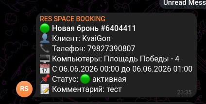

Игровая платформа
CyberRES
Создание матчей, лобби и турниров CS2. Интерфейсы для игроков и администраторов, управление игровыми серверами.
React · FastAPI · Docker
Интерфейсы, серверные сервисы и автоматизация. В каждом кейсе — задача, устройство решения и примеры работы.
Цифровые сервисы игровой площадки в Санкт-Петербурге.
Игровая платформа
Создание матчей, лобби и турниров CS2. Интерфейсы для игроков и администраторов, управление игровыми серверами.
React · FastAPI · Docker

Прокат оборудования
Каталог игровых устройств, оформление заявок, выдача через Telegram и управление остатками в админке.
Vue 3 · Node.js · Telegram

Автоматизация бронирований
Уведомления о новых бронях и отменах из SmartShell. Передача событий команде через Telegram и Bitrix24.
Python · GraphQL · Bitrix24
Предыдущие проекты и эксперименты.
Десктопное приложение для управления игровыми серверами CS2: настройки, консоль и плагины.
Electron · Vue 3Сбор отзывов с нескольких площадок и доставка новых сообщений в Telegram.
Python · Telegram